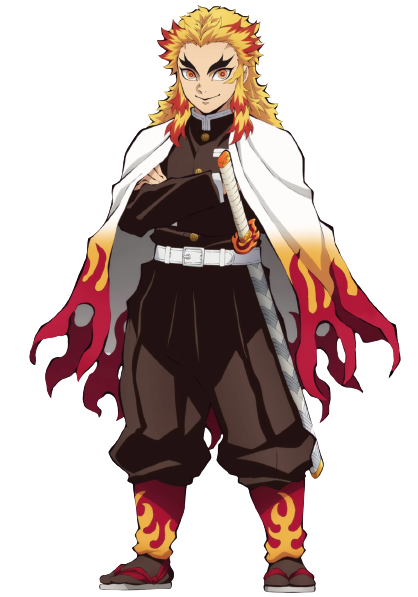
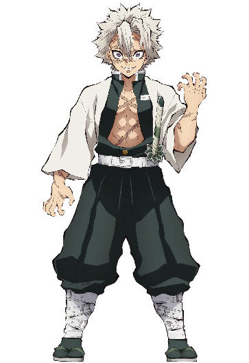

Rengoku Kyojuro
Hashira del Fuego, acompaño brevemente a Taniro en los sucesos del Tren Infinito. Encontraría su fin a manos de Akaza.
Tengen Uzui
Hashira del Sonido, hizo su aparición en el Arco del Distrito Rojo. Luego de cumplir su misión se retira del cuerpo de cazademonios
Giyu Tomioka
Pilar del Agua, fue quien vio en Tanjiro su voluntad de salvar a su hermana que a pesar de ser demonio lo defendio.
Mitsuri Kanroji
Mitsuri fue una Cazadora de Demonios que formó parte del grupo de los Pilares siendo conocida como el Pilar del Amor.
Obanai Iguro
Es un Cazador de Demonios, miembro de los Pilares siendo conocido como el Pilar de la Serpiente dentro del Cuerpo de Exterminio de Demonios.

Sanemi Shinazugawa
Es uno de los Cazadores de Demonios más fuertes y ágiles, destacando así dentro del grupo de élite como un Pilar siendo el actual Pilar del viento
Muichiro Tokito
Fue un Cazador de Demonios que ocupo el puesto del Pilar de la Niebla.
Shinobu Kocho
Shinobu fue una Cazadora de Demonios que se desempeñaba como uno de los Pilares; ella ocupó el puesto como el Pilar del Insecto.
Gyomei Himejima
Fue un cazador de demonios perteneciente al Cuerpo de Exterminio de Demonios y Pilar de la Roca.